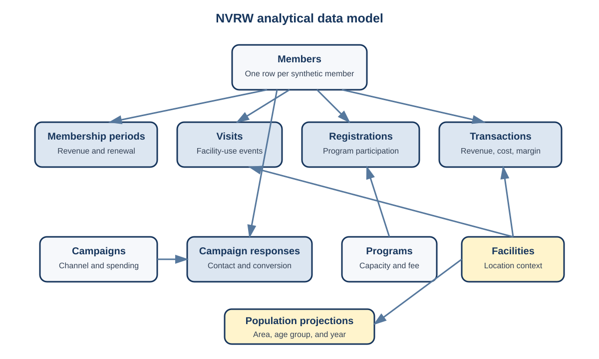

The project uses ten core tables. Members connect to membership periods, visits, registrations, transactions, and campaign responses. Programs connect to registrations, while campaigns connect to responses. Facilities provide location context for operational tables. Population projections connect through facility service area, age group, and year.

The complete package is available in data/nvrw/. It includes raw
files, clean files, derived tables, a data dictionary, an Excel
workbook, R scripts, and a Power BI guide.
The principal units of analysis are deliberately different:
members.csv;membership_periods.csv;visits.csv;programs.csv;registrations.csv; andpopulation_projections.csv.These tables cannot be joined casually. Joining every visit to every membership period for a member would duplicate visits when the member has several periods. The analyst must match each visit to the appropriate period or aggregate visits to the required unit before joining.